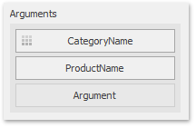

Drill-Down
The built-in drill-down capability allows you to change the detail level of data displayed in dashboard items on the fly. To learn more about drill-down concepts common to all dashboard items, see the Drill-Down topic.
When drill-down is enabled, you can click a tile to view its details.
Note
When Master Filtering is enabled, you can view the details by double-clicking a tile.

Drill-down requires that the Arguments section contains several dimensions, from the least detailed to the most detailed dimension.

Note
In OLAP mode, you can perform drill-down for either a hierarchy data item or several dimension attributes.
To enable drill-down, click the Drill Down button in the Data Ribbon tab (or the  button if you are using the toolbar menu).
button if you are using the toolbar menu).

To return to the previous detail level (drill up), use the Drill Up ( ) button in the caption of the Treemap dashboard item, or the Drill Up command in the context menu.
) button in the caption of the Treemap dashboard item, or the Drill Up command in the context menu.
Note
Grouping is not in effect when the drill-down is enabled.